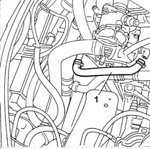
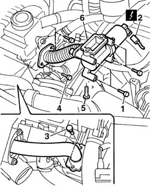

1080C10 e.g.r. valve - r + r
- Path
- Procedures > 10 ENGINE > 1080 EMISSION CONTROL SYSTEM > 1080C exhaust gas recirculation system (e.g.r.) > 1080C10 e.g.r. valve - r + r
- Kind
- repair procedure (removal / refitting; the operation number is the code)
- Applies to
- all engines; all production periods
- Interactive page
- https://sloeber94.github.io/elrnDB-fDbl/en/#/2584472
Applies to: all engines; all production periods
 Removing
Removing
 Refitting
Refitting5530B52 Battery DRIP TRAY/SUPPORT - R.R.
1048A10 air cleaner filtering element - replace
Disconnect the battery negative terminal.
Position a suitable container for recovering the coolant.
1. Disconnect the pipe shown from the thermostat.

Applies to: all engines; all production periods
1. Undo the bolts securing the EGR valve to the rigid pump intake.
2. Disconnect the EGR valve connection.
 | Name | Connector |
|---|---|---|
2 | EGR solenoid | L30 |
3. Undo the bolts securing the exhaust gas delivery hose to the intake manifold from the valve.
4. Undo the bolts fixing the pipe carrying exhaust gas to the valve.
5. Undo the bolt securing the hose to the oil heat exchanger.
6. Remove the EGR valve with actuator.

Applies to: all engines; all production periods
Refitting
RemovingFit the valve in its seat.
Tighten the bolts securing the valve to the rigid pipe carrying water to the pump.
Tighten the nut securing the pipe to the heat exchanger.
Tighten the bolts securing the exhaust gas delivery pipe to the intake manifold.
 | Fastening | Component | Ø | Value (daNm) |
|---|---|---|---|---|
- | Bolt | EGR VALVE PIPE | M8 | 2.5 |
Tighten the bolts securing the exhaust gas delivery pipe to the exhaust manifold.
| Fastening | Component | Ø | Value (daNm) |
|---|---|---|---|---|
- | Bolt | PIPE TO EGR VALVE | M8 | 2.5 |
Connect the electrical connection to the EGR valve.
| Name | Connector |
|---|---|---|
- | EGR solenoid | L30 |
Connect the engine coolant hose to the thermostat.
1048A10 air cleaner filtering element - replace
5530B52 Battery DRIP TRAY/SUPPORT - R.R.
1088A10 Engine COOLANT - Check density' and top up level, if necessary
Connect the battery negative terminal.
Topics linked from this page (4)
- 1048A10 air cleaner filtering element - replace
- 1088A10 Engine COOLANT - Check density' and top up level, if necessary
- 5530B10 battery - r+r
- 5530B52 Battery DRIP TRAY/SUPPORT - R.R.